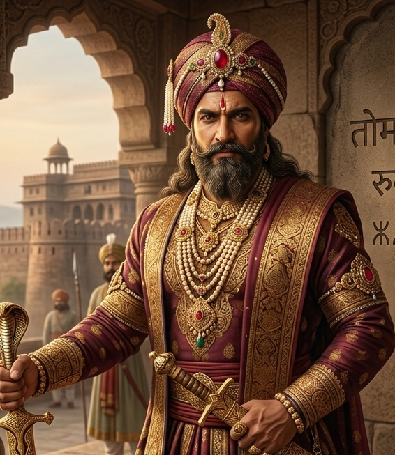
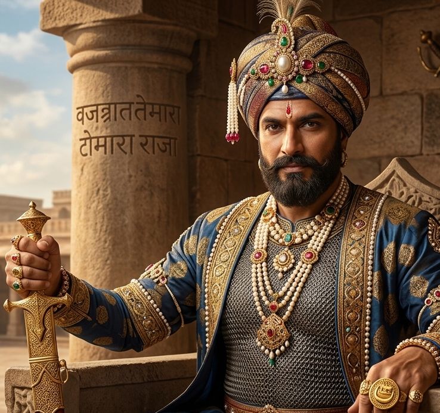
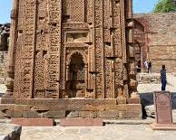
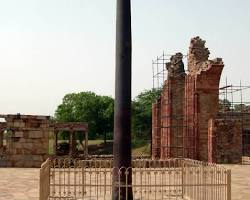
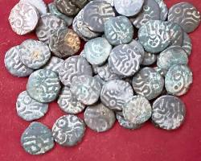
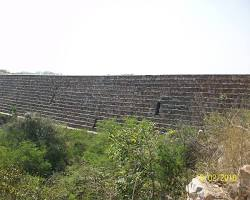
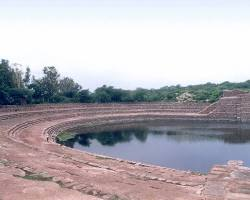

01
Royal Authority
Tomara rulers exercised authority over territories around Delhi and the wider Haryana region.
Discover the Tomara rulers who shaped the early political landscape of Delhi and contributed to the development of fortified settlements, sacred architecture and cultural traditions in northern India.
The Tomaras were an important ruling lineage of early medieval northern India, particularly associated with the Delhi-Haryana region.
The Tomara dynasty occupies an important place in the early history of Delhi. Their political influence grew in the Delhi region before the rise of later Rajput powers.
Tomara rulers are traditionally associated with the development of early fortified settlements around Delhi. The legendary figure of Anangpal Tomar is especially connected with the foundation and fortification traditions of early Delhi.
Their legacy can be explored through inscriptions, architectural remains, literary traditions and the historical landscape of Delhi and Haryana.
Tomara political power was connected with strategic settlements, fortified centres and regional networks.
Tomara rulers exercised authority over territories around Delhi and the wider Haryana region.
Strategic fortifications helped protect settlements and strengthen political control.
Control of important routes and fortified locations was central to maintaining regional influence.
Inscriptions and literary traditions provide evidence for understanding Tomara rule and genealogy.
Follow the major developments associated with Tomara political and architectural history.
The Tomara lineage emerged as an influential political power in the Delhi-Haryana region.
Tomara authority became associated with settlements and political networks around Delhi.
Anangpal Tomar is traditionally associated with the development of Lal Kot, an early fortified settlement of Delhi.
Tomara political influence eventually gave way to the expanding power of the Chauhans in Delhi.
Explore important figures associated with Tomara political history.
Traditionally associated with the development of Lal Kot and early fortified Delhi.

IIA representative figure used to explore the wider Tomara ruling tradition and its regional political networks.

IIIExplore the early Tomara tradition through rulers recorded in historical and genealogical traditions.
Try another search term.

Lal Kot is traditionally associated with the Tomara phase of Delhi's early fortified history.
The fortification tradition is important because it provides a connection between early medieval political authority and the later development of Delhi as a major imperial capital.
The Tomara legacy extends beyond political history into architecture, sacred traditions and the historical development of Delhi.
Early defensive architecture shaped the development of Delhi's historic landscape.
Religious structures and sacred landscapes formed part of the wider cultural environment.
Epigraphic evidence helps historians reconstruct political lineages and regional history.
Tomara traditions form an important layer in the long architectural history of Delhi.
A visual collection representing the historical landscape and cultural legacy of the Tomaras.




Historical portraits and reconstructed visuals should be clearly identified as artistic representations. Architectural and heritage photographs should retain their original source attribution and licensing information.